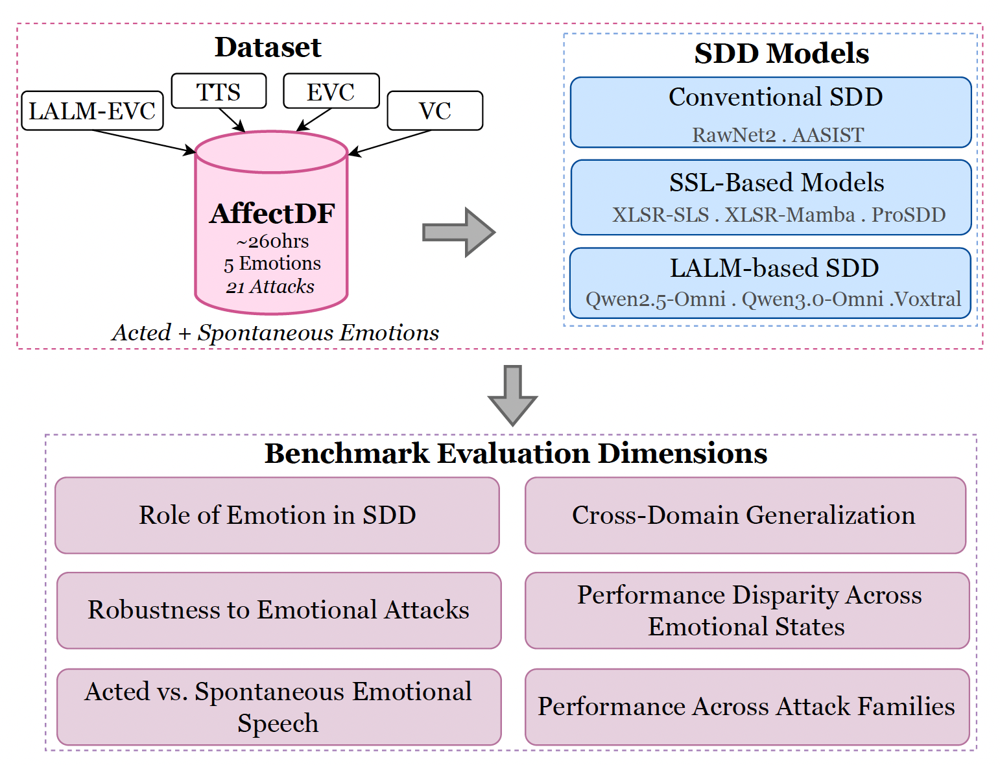
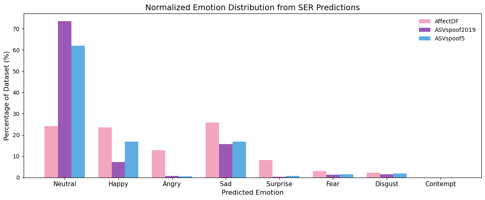
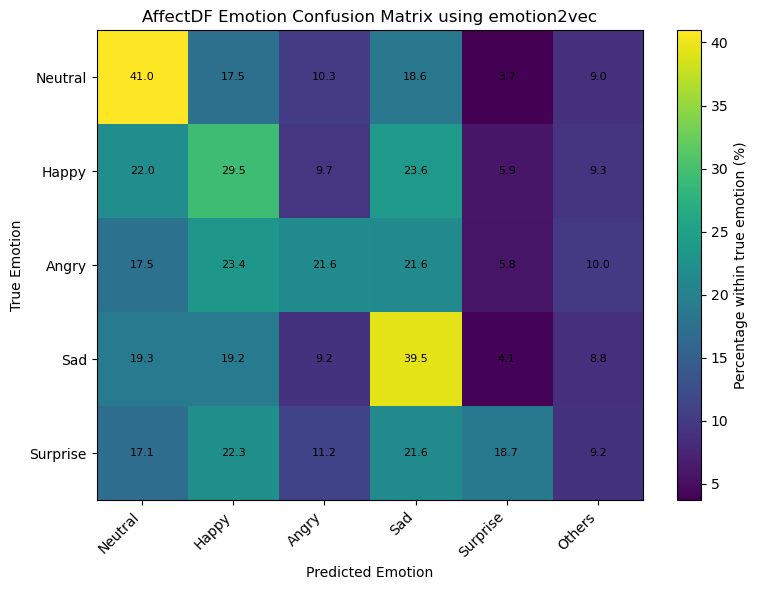

A large-scale benchmark spanning 21 spoofing systems, five emotion conditions, and ~260 hours of data.
Submitted to EMNLP 2026

AffectDF spans 21 spoofing attacks across Train, Development, and Test partitions with disjoint speakers and attack systems. Generation types cover TTS, VC, EVC, VC+EVC, and LALM-based systems across five emotional states using both the ESD (acted) and MSP-Podcast (spontaneous) corpora.
| Attack ID | Generation Type | Model | Base Data | Samples | No. Spks | Split |
|---|---|---|---|---|---|---|
| TRAIN | ||||||
| A01 | LALM-EVC | Qwen 2.5-Omni | ESD | 35,000 | 4 | Train |
| A02 | LALM-EVC | Qwen 2.5-Omni (steered) | ESD | 28,000 | 4 | Train |
| A03 | TTS | CosyVoice | ESD | 5,999 | 4 | Train |
| A04 | TTS | CosyVoice2 | ESD | 6,000 | 4 | Train |
| A05 | TTS | Qwen3-TTS | ESD | 6,000 | 4 | Train |
| DEVELOPMENT | ||||||
| A06 | LALM-EVC | MiniCPM | ESD | 17,500 | 2 | Dev |
| A07 | TTS | CosyVoice3 | ESD | 2,830 | 2 | Dev |
| TEST | ||||||
| A08 | LALM-EVC | Kimi-Audio | ESD | 34,992 | 4 | Test |
| A09 | LALM-EVC | Kimi-Audio (steered) | ESD | 27,994 | 4 | Test |
| A10 | VC+EVC | Vevo2 | ESD | 24,000 | 4 | Test |
| A11 | VC | Vevo 2 | ESD | 6,000 | 4 | Test |
| A12 | EVC | GenVC | ESD | 24,000 | 4 | Test |
| A13 | VC | GenVC | ESD | 6,000 | 4 | Test |
| A14 | VC | GenVC | MSP | 4,108 | 4 | Test |
| A15 | VC | ConsistencyVC | ESD | 6,052 | 4 | Test |
| A16 | VC | TriAAN-VC | ESD | 6,000 | 4 | Test |
| A17 | VC | DDDMVC | ESD | 6,000 | 4 | Test |
| A18 | TTS | Style-TTS2 | ESD | 6,000 | 4 | Test |
| A19 | TTS | Style-TTS2 | MSP | 4,107 | 4 | Test |
| A20 | TTS | F5-TTS | ESD | 6,000 | 4 | Test |
| A21 | TTS | F5-TTS | MSP | 4,107 | 4 | Test |
Conventional training fails under emotional spoofing. ASVspoof2019-trained models perform well on ASVspoof2019/2021 but degrade sharply on AffectDF, with RawNet2 and AASIST reaching 59.71% and 56.40% EER. ASVspoof5 training improves AffectDF for some models, but remains inconsistent across architectures and collapses on EmoFake for several systems.
Emotional training does not guarantee generalization. Training on AffectDF improves some emotional-domain results, but sharply hurts performance on ASVspoof2019 and ASVspoof5 for nearly all models. This suggests current SDD systems still learn dataset- and attack-specific cues rather than transferable spoof representations.
Table 2: Cross-domain evaluation of SDD models trained on ASVspoof2019, ASVspoof5, and AffectDF. Results in EER (%).
| Model | Train Data | ASVspoof-2019 | ASVspoof-2021 | ASVspoof5 | EmoFake | AffectDF |
|---|---|---|---|---|---|---|
| RawNet2 | ASVspoof2019 | 4.60 | 8.08 | 40.67 | 21.71 | 59.71 |
| AASIST | ASVspoof2019 | 0.83 | 8.15 | 35.53 | 13.64 | 56.40 |
| XLSR-SLS | ASVspoof2019 | 0.56 | 3.04 | 25.43 | 8.84 | 44.91 |
| XLSR-Mamba | ASVspoof2019 | 0.20 | 1.64 | 15.54 | 0.69 | 29.78 |
| ProSDD | ASVspoof2019 | 0.42 | 3.87 | 16.14 | 3.70 | 31.04 |
| RawNet2 | ASVspoof5 | 24.75 | 25.59 | 43.61 | 49.49 | 33.02 |
| AASIST | ASVspoof5 | 23.16 | 22.74 | 25.77 | 62.71 | 18.00 |
| XLSR-SLS | ASVspoof5 | 27.00 | 26.54 | 39.62 | 58.57 | 32.28 |
| XLSR-Mamba | ASVspoof5 | 13.65 | 13.67 | 7.27 | 20.77 | 35.27 |
| ProSDD | ASVspoof5 | 19.04 | 18.08 | 7.38 | 25.06 | 12.49 |
| RawNet2 | AffectDF | 43.02 | 47.25 | 44.65 | 6.59 | 23.17 |
| AASIST | AffectDF | 44.52 | 48.78 | 45.75 | 22.60 | 36.91 |
| XLSR-SLS | AffectDF | 64.83 | 60.56 | 56.54 | 18.41 | 36.20 |
| XLSR-Mamba | AffectDF | 46.47 | 53.09 | 47.67 | 28.39 | 41.60 |
| ProSDD | AffectDF | 58.15 | 56.43 | 63.16 | 22.08 | 48.14 |
Failure is emotion-dependent, but not emotion-specific. The highest EER shifts across neutral, happy, angry, sad, and surprise depending on the model and training data. This shows that no single emotion is universally hardest; failures arise from the interaction between emotional prosody, attack type, and detector architecture.
AffectDF training still leaves large emotion gaps. Even after training on emotionally expressive data, models show wide EER variation across emotions. This indicates that current detectors do not learn emotion-invariant spoof cues, even when exposed to balanced emotional training conditions.
Table 3: Emotion-wise EER (%) results. N = Neutral, H = Happy, A = Angry, S = Sad, Su = Surprise. EmoFake does not include Sad.
| Model | Train Data | EmoFake | AffectDF | ||||||||
|---|---|---|---|---|---|---|---|---|---|---|---|
| N | H | A | S | Su | N | H | A | S | Su | ||
| RawNet2 | ASVspoof2019 | 19.66 | 16.57 | 23.00 | – | 28.54 | 56.21 | 60.93 | 63.82 | 48.88 | 64.28 |
| AASIST | ASVspoof2019 | 17.20 | 11.63 | 15.00 | – | 13.57 | 65.45 | 61.07 | 50.91 | 41.82 | 48.56 |
| XLSR-SLS | ASVspoof2019 | 5.20 | 8.09 | 9.03 | – | 10.77 | 59.94 | 51.92 | 31.87 | 32.12 | 39.46 |
| XLSR-Mamba | ASVspoof2019 | 0.86 | 0.43 | 0.94 | – | 0.54 | 28.52 | 31.78 | 26.13 | 21.42 | 23.99 |
| ProSDD | ASVspoof2019 | 2.14 | 3.60 | 4.57 | – | 2.29 | 31.70 | 33.56 | 26.20 | 24.08 | 33.14 |
| RawNet2 | ASVspoof5 | 52.29 | 48.07 | 42.86 | – | 45.30 | 42.25 | 33.99 | 25.00 | 30.44 | 20.38 |
| AASIST | ASVspoof5 | 70.46 | 59.51 | 56.34 | – | 63.06 | 22.48 | 17.48 | 14.04 | 22.00 | 10.98 |
| XLSR-SLS | ASVspoof5 | 59.71 | 55.67 | 59.16 | – | 58.50 | 39.73 | 30.74 | 27.05 | 38.49 | 20.25 |
| XLSR-Mamba | ASVspoof5 | 20.71 | 17.29 | 17.00 | – | 22.29 | 40.85 | 41.55 | 22.83 | 23.14 | 20.06 |
| ProSDD | ASVspoof5 | 27.46 | 22.17 | 20.94 | – | 18.74 | 16.25 | 11.95 | 9.60 | 13.83 | 7.35 |
| RawNet2 | AffectDF | 7.51 | 5.00 | 6.66 | – | 5.14 | 25.67 | 26.79 | 17.18 | 15.40 | 15.05 |
| AASIST | AffectDF | 25.06 | 23.14 | 26.71 | – | 15.83 | 45.98 | 49.23 | 22.57 | 25.11 | 18.03 |
| XLSR-SLS | AffectDF | 14.86 | 16.57 | 15.63 | – | 23.34 | 41.86 | 43.30 | 25.07 | 25.40 | 21.15 |
| XLSR-Mamba | AffectDF | 29.00 | 31.26 | 30.66 | – | 22.14 | 57.60 | 52.31 | 24.65 | 27.15 | 22.33 |
| ProSDD | AffectDF | 21.34 | 14.66 | 14.46 | – | 21.20 | 46.11 | 50.02 | 43.84 | 48.03 | 35.23 |
| Qwen-2.5-Omni | Inference-only | 29.37 | 22.96 | 25.50 | – | 31.49 | 54.16 | 48.74 | 37.81 | 23.76 | 41.61 |
| Qwen-3.0-Omni | Inference-only | 35.12 | 31.73 | 39.58 | – | 39.74 | 41.14 | 37.69 | 42.47 | 40.85 | 44.99 |
| Voxtral | Inference-only | 52.24 | 50.81 | 52.79 | – | 50.67 | 56.46 | 56.48 | 51.99 | 50.57 | 50.56 |
Prompting LALMs is insufficient for robust SDD. Qwen-2.5-Omni performs reasonably on ASVspoof2019 and EmoFake but degrades on ASVspoof5 and AffectDF, while Voxtral remains poor across nearly all benchmarks. General audio-language understanding does not directly translate to spoof detection.
LALM robustness is highly benchmark-dependent. Qwen-3.0-Omni performs better on ASVspoof5 than on ASVspoof2019 or AffectDF, showing unstable behavior across evaluation domains. This suggests inference-only LALMs remain sensitive to attack diversity and emotional variability.
Table 4: Inference-only evaluation of LALM models. Results in EER (%).
| Model | ASV19 | ASV5 | EmoFake | AffectDF |
|---|---|---|---|---|
| Qwen-2.5-Omni | 29.54 | 46.23 | 25.15 | 45.29 |
| Qwen-3.0-Omni | 42.42 | 27.91 | 34.18 | 39.81 |
| Voxtral | 46.06 | 50.62 | 51.76 | 54.20 |
Speaking style alone does not explain difficulty. The acted–spontaneous gap changes by model and attack: ASVspoof2019-trained systems often struggle more on acted attacks, while ASVspoof5-trained systems show partial transfer to both acted and spontaneous conditions.
Emotional training is not style-invariant. Although AffectDF training uses acted emotional speech, several models perform better on spontaneous attacks than acted counterparts. Robustness depends on the source style, generation model, and detector architecture — not simply on whether emotional data was used in training.
Table 5: Attack-wise EER (%) for acted (A13, A18, A20) and spontaneous (A14, A19, A21) emotional speech generation systems. Overall = pooled EER.
| Model | Train Data | Acted | Spontaneous | ||||||
|---|---|---|---|---|---|---|---|---|---|
| A13 | A18 | A20 | Overall | A14 | A19 | A21 | Overall | ||
| RawNet2 | ASVspoof2019 | 62.33 | 53.02 | 51.16 | 55.51 | 44.26 | 44.27 | 39.74 | 42.74 |
| AASIST | ASVspoof2019 | 62.90 | 49.48 | 60.33 | 57.47 | 43.11 | 62.31 | 48.23 | 51.38 |
| XLSR-SLS | ASVspoof2019 | 42.81 | 45.80 | 74.85 | 48.64 | 34.10 | 44.01 | 40.93 | 41.83 |
| XLSR-Mamba | ASVspoof2019 | 6.43 | 27.42 | 53.70 | 31.43 | 22.18 | 27.05 | 25.57 | 25.73 |
| ProSDD | ASVspoof2019 | 14.22 | 18.47 | 15.57 | 16.46 | 9.43 | 54.15 | 22.49 | 29.72 |
| RawNet2 | ASVspoof5 | 35.25 | 36.40 | 41.07 | 37.25 | 23.27 | 53.01 | 62.36 | 47.48 |
| AASIST | ASVspoof5 | 21.57 | 14.67 | 38.56 | 25.17 | 12.24 | 22.04 | 39.81 | 25.69 |
| XLSR-SLS | ASVspoof5 | 36.93 | 25.85 | 41.70 | 34.90 | 32.62 | 32.82 | 62.82 | 42.66 |
| XLSR-Mamba | ASVspoof5 | 17.22 | 41.30 | 35.04 | 34.11 | 2.02 | 35.41 | 37.03 | 31.91 |
| ProSDD | ASVspoof5 | 5.25 | 13.85 | 18.50 | 13.72 | 5.84 | 19.96 | 37.11 | 23.11 |
| RawNet2 | AffectDF | 34.38 | 1.58 | 1.35 | 18.97 | 4.79 | 2.63 | 2.69 | 3.64 |
| AASIST | AffectDF | 40.95 | 33.59 | 21.41 | 34.38 | 21.21 | 20.62 | 17.80 | 19.71 |
| XLSR-SLS | AffectDF | 30.45 | 28.95 | 23.97 | 28.28 | 17.06 | 26.25 | 27.44 | 24.67 |
| XLSR-Mamba | AffectDF | 47.15 | 40.09 | 16.66 | 40.44 | 18.82 | 18.76 | 16.14 | 18.16 |
| ProSDD | AffectDF | 48.06 | 9.60 | 13.87 | 26.92 | 51.86 | 21.89 | 27.47 | 34.18 |
| Qwen-2.5-Omni | Inference-only | 45.51 | 48.29 | 48.90 | 47.57 | 44.64 | 47.17 | 45.60 | 45.87 |
| Qwen-3.0-Omni | Inference-only | 36.60 | 53.34 | 45.91 | 46.21 | 26.81 | 43.61 | 50.64 | 40.81 |
| Voxtral | Inference-only | 54.77 | 55.89 | 53.83 | 54.85 | 46.94 | 49.96 | 37.61 | 45.18 |

Figure 2
Normalized emotion distribution from Emotion2Vec+-large predictions across AffectDF, ASVspoof2019, and ASVspoof5. AffectDF shows substantially higher coverage of happy, angry, sad, and surprise compared to conventional benchmarks.

Figure 3
Emotion confusion matrix for AffectDF using Emotion2Vec+-large predictions. Predictions are distributed across multiple emotion categories, confirming meaningful emotional variability in the dataset.
This dataset is designed to improve the performance of speech security systems against state-of-the-art emotional synthetic speech. It is released for research purposes only. Refer to the paper for more details.